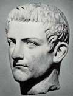

главная  персоналии
персоналии  Калигула
Калигула
главная |

Личность в историикраткая энциклопедияПроект «Личность в истории» посвящен людям — современникам грандиозных исторических событий, носителям редких качеств или людям, взгляды которых опередили их время. |
|||||||||||||||||||||||||||||||||||||||||||
Коротко |
Статьи |
Персоналии |
Литература |
||||||||||||||||||||||||||||||||||||||||
Калигула |
|||||||||||||||||||||||||||||||||||||||||||
|
«Он был самым желанным правителем и для большинства провинций и войск, где многие помнили его еще младенцем, и для всей римской толпы…» Светоний, |
 Гай Калигула. | ||||||||||||||||||||||||||||||||||||||||||
Биографическая справкаГай Цезарь Германик Калигула (31.08.12–24.01.41), римский император с 18 марта 37 г. н. э., сын Германика и Агриппины. Воспитывался в Германии и вырос в военном лагере среди солдат. Свое прозвище Калигула получил от солдатской обуви (caligae), которую носил в детстве. Рано остался без родителей. В период своего правления пользовался любовью народа, восстанавливал храмы и дворцы, начал строительство двух новых водопроводов. Калигула заботился о сохранении исторического наследия, пытался восстановить народные собрания. Увлекался риторикой. Сенатская оппозиция, недовольная политикой Калигулы, организовала два заговора. Заговоры были раскрыты. Убит в результате третьего. После смерти Калигулы информация о его правлении традиционно искажалась. Его обвиняли в сожительстве со своей сестрой Друзиллой и злоупотреблениях властью.
Цитаты«Постройки начатые Тиберием, он завершил: храм Августа и театр Помпея. Сам он начал строить водопровод из области Тибура и амфитеатр поблизости от септы; одну из этих построек его приемник Клавдий довел до конца, другую оставил. В Сиракузах он восстановил рухнувшие от ветхости стены и храм богов. Собирался он и на Самосе отстроить дворец Поликрата, и в Милете довершить Дидимейский храм…». (Гай Светоний Транквилл., «…он посвятил своему божеству особый храм, назначил жрецов, установил изысканнейшие жертвы. В храме он поставил изваяние в полный рост и облачил его в собственные одежды. Должность главного жреца отправляли поочередно самые богатые граждане, соперничая (Гай Светоний Транквилл., «Я ознакомился с письмом, которое доставили мне ваши послы, и отмечаю, что вы дали доказательство большой преданности и большого уважения ко мне. Вы совершили жертвоприношения и провели церемонию в мою честь, удостоив тем самым меня самыми большими почестями. <…> Что же касается статуй в мою честь, которые вы предлагаете установить, то я освобождаю вас от большинства из них». (??з письмя Гая Калигулы «…Клянемся во имя Зевса-спасителя, во имя божественного Цезаря августа и во имя нашей чистой божественной Девы Полиодской быть честными по отношению к Гаю Цезарю Августу и всем членам его семьи, и иметь друзьями тех, кого он выберет, иметь врагами тех, кого он будет обвинять». (Клятва граждан города Ассоса «В душе с решительностью клянусь быть врагом тех, кто будет признан врагом Гая Цезаря Германика. Если (Клятва гражданина Ариции Гая Умидия Квадрата Статьи
Список литературы
|
|||||||||||||||||||||||||||||||||||||||||||
|